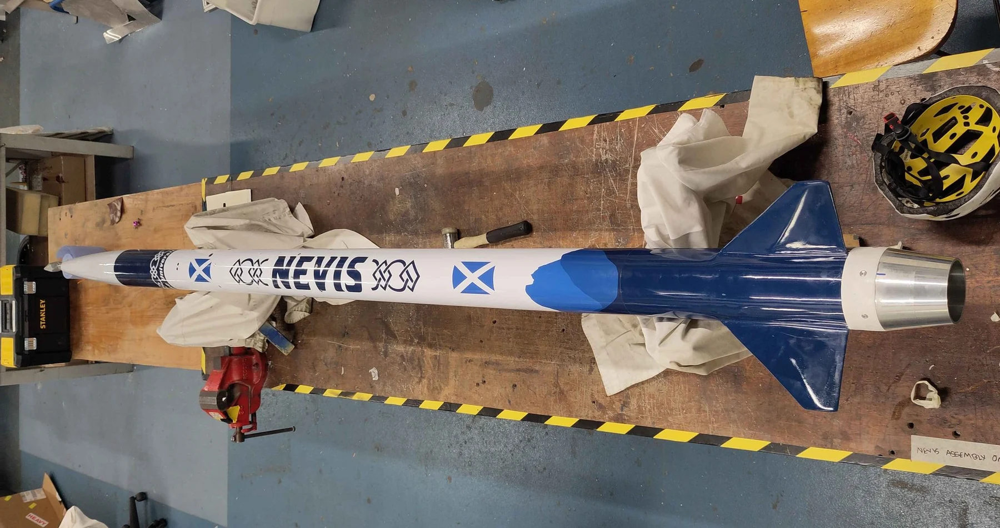
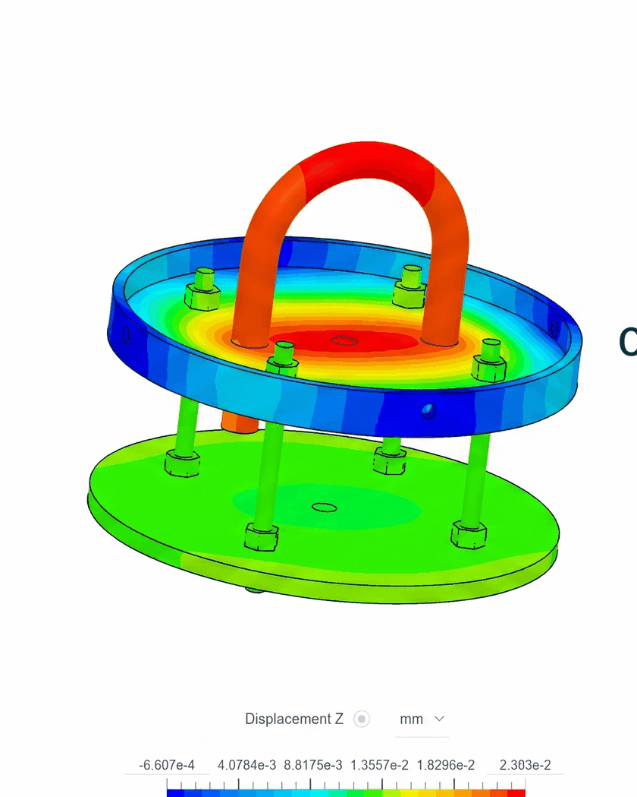
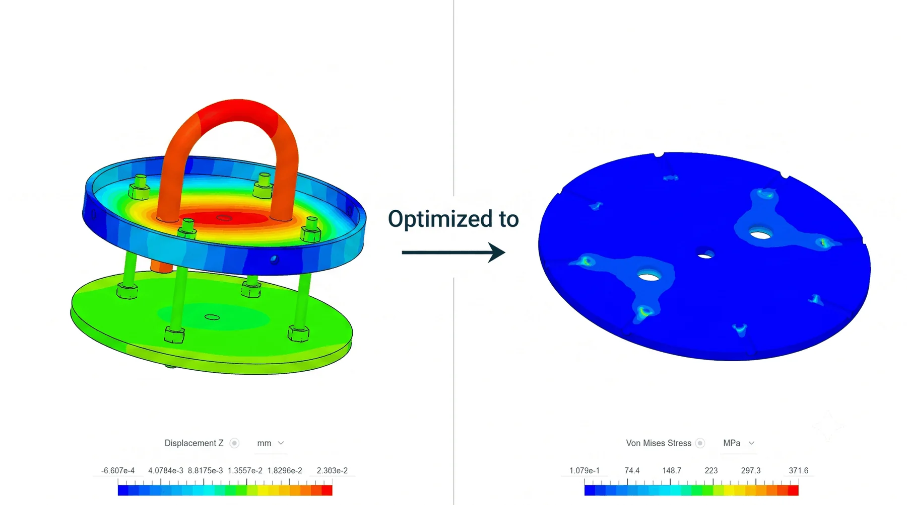
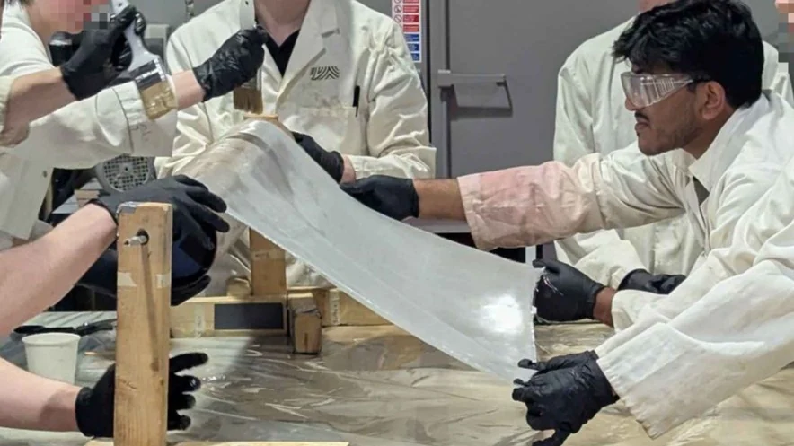

Interface design
Bulkhead geometry and airframe bolt pattern carrying the main parachute shock cord into the motor bay.

Work/04 of 05Launched
Airframe design engineer. The recovery interface and bulkhead that take the main parachute's opening shock, cut to half their mass through design changes checked with FEA.
Nevis competed in the 30,000 ft category at the Intercollegiate Rocket Engineering Competition in New Mexico. The main technical challenge on my side was a recovery junction able to absorb the shock of main parachute deployment, with proper margins against axial drag compression and gust-induced bending on the way up.
I designed the structural interface that connects the main parachute shock cord to the motor bay assembly in SolidWorks: the bulkhead geometry, the U-bolt pass-throughs and the bolt pattern that ties it into the airframe. Every load path from the cord has to reach the body tube without a single part becoming the weak link.
Using SolidWorks and ANSYS Mechanical, I ran iterative linear static stress simulations across the peak deployment load cases, up to 30 g deceleration spikes. The critical concentrations around the U-bolt pass-throughs and the fastener shear ring were mapped and reinforced.
The mass came off through design decisions as much as through the analysis. The low-stress zones were pocketed out of the CNC-milled 6061-T6 aluminium bulkhead, the bolt pattern was rebalanced so the load spread evenly, and each change went back through the FEA. Structural mass fell by over 50% while the ultimate factor of safety stayed above 2.2.

 Original assemblyOptimised bulkhead
Original assemblyOptimised bulkhead

The airframe tubes are glass and carbon fibre wet layups, and I worked on the layup with the rest of the team. That's me in the photo.

I defended the airframe margins and manufacturing process through the Preliminary and Critical Design Reviews. At Spaceport America in June 2026, Nevis flew to 24,528 ft, passed Mach 1 and placed 8th.
24,528 ft, Mach 1+, recovered, and 8th at IREC 2026.
Bulkhead geometry and airframe bolt pattern carrying the main parachute shock cord into the motor bay.
Linear static FEA under axial compression, gust bending and deployment jerk loads, used to check each design change. Over 50% mass removed with margins kept.
Hands-on glass and carbon fibre wet layup on the airframe tubes, with the team.
Defended airframe margins and processes, then flew supersonic to 24,528 ft.